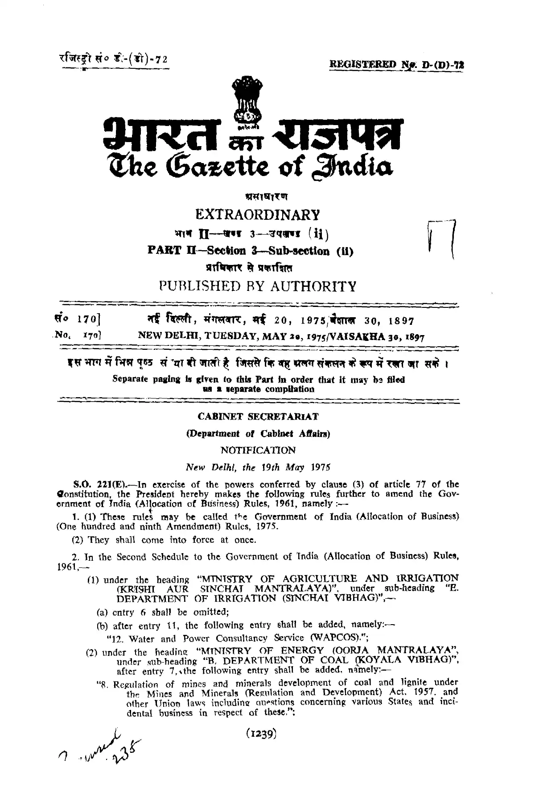
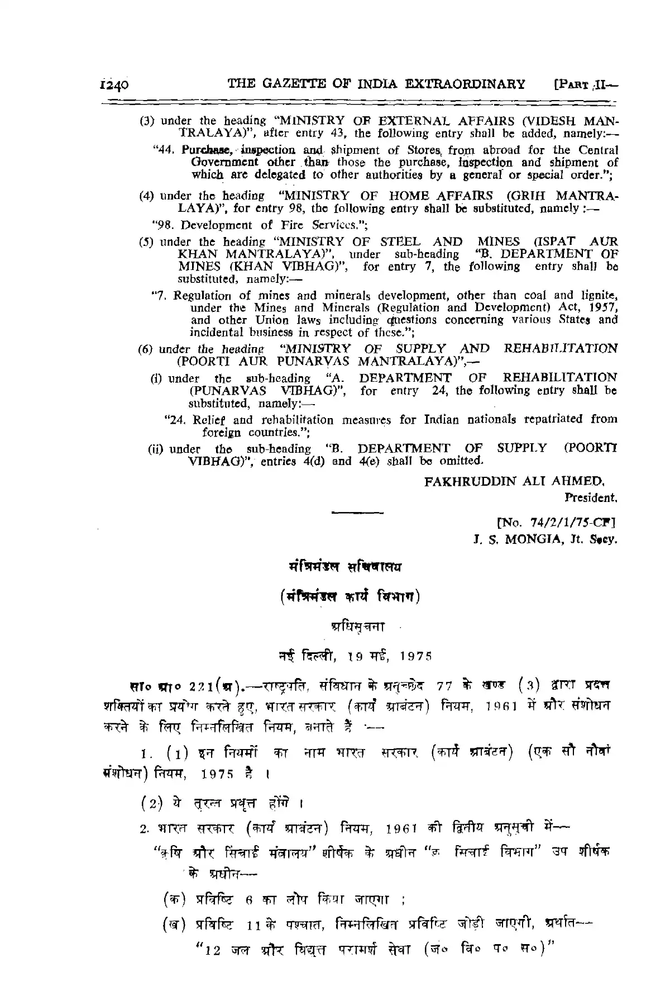
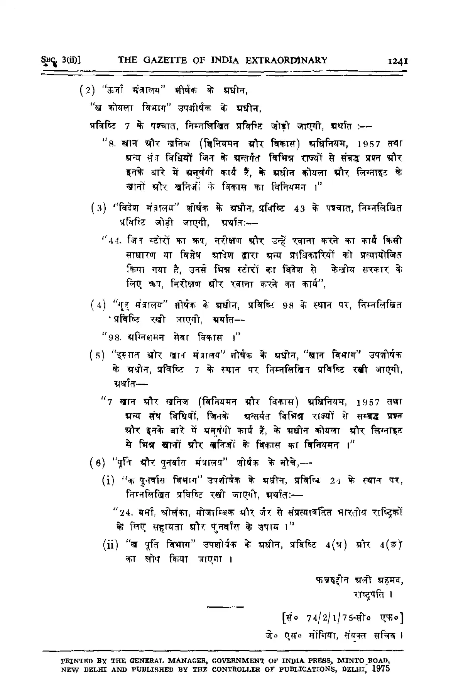

Amendment #109 (S.O. 221(E), 1975)
8 changes: 0 to the First Schedule, 8 to the Second Schedule. 6 applied2 not applied
The order, page by page
Page 1 of 4

123Schedule 2 › MINISTRY OF AGRICULTURE AND IRRIGATION › DEPARTMENT OF IRRIGATION › entry 6
applied at schedule 2 › ministry MINISTRY OF AGRICULTURE AND IRRIGATION › department E › entry 6 in the Rules after #109
after Schedule 2 › MINISTRY OF AGRICULTURE AND IRRIGATION › DEPARTMENT OF IRRIGATION › entry 11
- 12. Water and Power Consultancy Service (WAPCOS).
applied at schedule 2 › ministry MINISTRY OF AGRICULTURE AND IRRIGATION › department E › entry 12 in the Rules after #109
after Schedule 2 › MINISTRY OF ENERGY › DEPARTMENT OF COAL › entry 7
- 8. Regulation of mines and minerals development of coal and lignite under the Mines and Minerals (Regulation and Development) Act. 1957. and other Union laws including questions concerning various States and incidental business in respect of these.
applied at schedule 2 › ministry MINISTRY OF ENERGY (0ORJA MANTRALAYA) › department B › entry 8 in the Rules after #109
Page 2 of 4

45678after Schedule 2 › MINISTRY OF EXTERNAL AFFAIRS › entry 43
- 44. Purchase, inspection and shipment of Stores, from abroad for the Central Government other than those the purchase, Inspection and shipment of which are delegated to other authorities by a general or special order.
not applied (the change could not be placed in the Rules as read; see How this document was read)
Schedule 2 › MINISTRY OF HOME AFFAIRS › entry 98
- 98. Development of Fire Services.
applied at schedule 2 › ministry MINISTRY OF HOME AFFAIRS › part I › group_heading The following subjects which are relatable to… in the Rules after #109
Schedule 2 › MINISTRY OF STEEL AND MINES › DEPARTMENT OF MINES › entry 7
- 7. Regulation of mines and minerals development, other than coal and lignite under the Mines and Minerals (Regulation and Development) Act, 1957 and other Union laws including questions concerning various States and incidental business in respect of these.
applied at schedule 2 › ministry MINISTRY OF STEEL AND MINES › department B › entry 7 in the Rules after #109
Schedule 2 › MINISTRY OF SUPPLY AND REHABILITATION › DEPARTMENT OF REHABILITATION › entry 24
- 24, Relief and rehabilitation measures for Indian nationals repatriated from foreign countries.
applied at schedule 2 › ministry MINISTRY OF SUPPLY AND REHABILITATION › department A › entry 24 in the Rules after #109
Schedule 2 › MINISTRY OF SUPPLY AND REHABILITATION › DEPARTMENT OF SUPPLY › entry 4 › item d; Schedule 2 › MINISTRY OF SUPPLY AND REHABILITATION › DEPARTMENT OF SUPPLY › entry 4 › item e
not applied (the change could not be placed in the Rules as read; see How this document was read)
Page 3 of 4

Page 4 of 4
How this document was read
Known issues
| Change | Issue | Known as |
|---|---|---|
| 4 | change 4: no entry 43 under schedule 2 › ministry MINISTRY OF EXTERNAL AFFAIRS | Entries not in the state |
| 8 | change 8: 2 parts are item d under schedule 2 › ministry MINISTRY OF SUPPLY AND REHABILITATION › department B › entry 4 | A number twice |
From the Government of India (Allocation of Business) Rules, 1961 and their amendments, as published by the Cabinet Secretariat (cabsec.gov.in), read by orgpedia. The readings of the older scanned gazettes have known gaps.